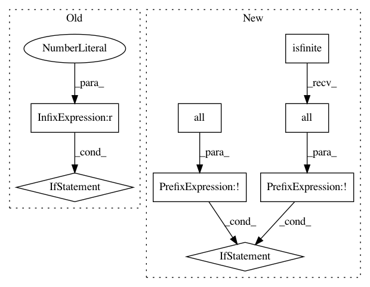

a45ff3eac825bf8d322cacc3587fd5bb3cda8119,scipy/interpolate/fitpack2.py,UnivariateSpline,__init__,#UnivariateSpline#Any#Any#Any#Any#Any#Any#Any#,159
Before Change
data = dfitpack.fpcurf0(x,y,k,w=w,
xb=bbox[0],xe=bbox[1],s=s)
if data[-1] == 1:
// nest too small, setting to maximum bound
data = self._reset_nest(data)
self._data = data
self._reset_class()
@classmethod
After Change
ext=0, check_finite=False):
if check_finite:
if (not np.isfinite(x).all() or not np.isfinite(y).all() or
not np.isfinite(w).all()):
raise ValueError("Input must not contain NaNs or infs.")
// _data == x,y,w,xb,xe,k,s,n,t,c,fp,fpint,nrdata,ier
self._data = dfitpack.fpcurf0(x,y,k,w=w,
xb=bbox[0],xe=bbox[1],s=0)
self._reset_class()
In pattern: SUPERPATTERN
Frequency: 3
Non-data size: 8
Instances
Project Name: scipy/scipy
Commit Name: a45ff3eac825bf8d322cacc3587fd5bb3cda8119
Time: 2014-11-23
Author: evgeni@burovski.me
File Name: scipy/interpolate/fitpack2.py
Class Name: UnivariateSpline
Method Name: __init__
Project Name: statsmodels/statsmodels
Commit Name: 285cdf6a5c6842713092f316f19f7bfe541cbd68
Time: 2020-07-07
Author: kevin.k.sheppard@gmail.com
File Name: statsmodels/tsa/innovations/arma_innovations.py
Class Name:
Method Name: arma_innovations
Project Name: matplotlib/matplotlib
Commit Name: da83457d51b516d036b3373c6805443f76185451
Time: 2019-04-03
Author: 2836374+timhoffm@users.noreply.github.com
File Name: lib/matplotlib/figure.py
Class Name: Figure
Method Name: set_size_inches